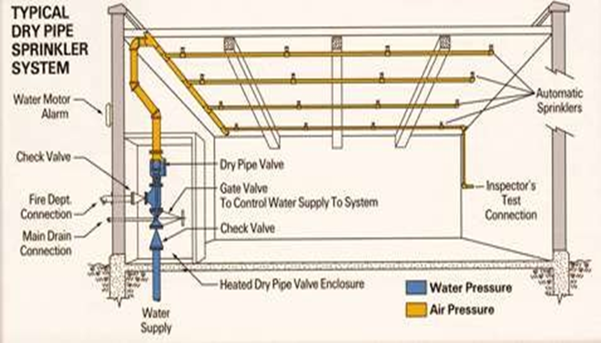

A dry Riser system or dry pipe system is made of complete water-distribution system with sprinkler head or risers and branches with hydrants throughout the buildings in which there is no running water.
In the sprinkler system the dry pipe system is used partly to protect the interior of the buildings against hazards of burst and leaky pipe to avoid freezing of water in the pipes.
Water is turned into water distribution system either automatically or manually on the outbreak of fire or the sounding of alarm gong to smother or extinguish fire.
When the fuse melts in due to the heat generated by fire, water gushes in and air exhausted through the sprinkler head quickly.
In the preaction system water is admitted to the system by a valve actuated by a thermostatic controlled device that function in advance of the sprinkler system.
The distribution system is laid with a slope of about 1:200, so that the complete water is drained out of the system.
Provision of necessary pressure gauges is made on main water supply, distribution, air tank, pumps, etc.

The provision of wet riser system whenever made for residential building should have the following features:
The Wet riser are designed for Zonal distribution of water according to height of building
These risers are connected to fire pumps separately provided for this purpose in the buildings
A wet riser must be provided near the enclosure staircase.
The pipe fitting should be approved make and quality by the competent authority.